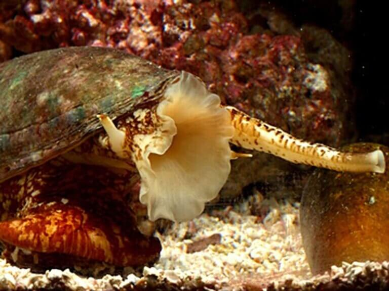

Você já parou para pensar como o mundo animal é fantástico e como cada animal é adaptado para todos os tipos de situação?
Então nesse site você verá Os 4 Animais Mais Venenosos Do Mundo, é interessante como alguns animais tão pequenos conseguem produzir um veneno tão poderoso
Os caracóis cone são invertebrados, tem um grande número de espécies graças ao seu método de alimentação predatório com um aparelho de veneno sofisticado e letal. São predadores lentos e com hábitos noturnos, a intensidade do veneno pode variar de caracol para caracol, em humanos um pode causar um pequena picada ou levar a morte.
O pequeno polvo vive na costa da autrália e pode chegar a 12cm,e é conhecido pelos visíveis anéis azuis em seu corpo
Sua dieta consiste basicamente de carangueijos pequenos e camarões, em seu modo de ataque ele salta para a presa morde a presa e usa seu bico para rasgar aos poucos
Seu veneno é uma mistura de compostos tóxicos chamado tetrodoxina, e uma dose do seu veneno é capaz de matar até 20 homens, sua toxina é bem parecida com o caracol de cone de mármore
A Cobra Real é uma espécie de serpente peçonhenta que vive nas planícies e florestas da Ìndia e da China, é a maior cobra peçonhenta conhecida que vão de 3 a 4 metros sendo que a maior já registrada chegou a 5,85 metros.
Essa cobra tem a capacidade de injetar grandes quantidades de veneno por mordida, oque a torna uma das mais letais. Ela pode liberar até 7 mililitros que é capz de matar um tigre e até um elefante.
Elas são encontradas na costa australiana e pode ter tentáculos de até 3 metros de comprimento, um dose de seu veneno é poderoso o bastante para matar até 60 humanos. É considerada a água viva mais letal dos oceanos.